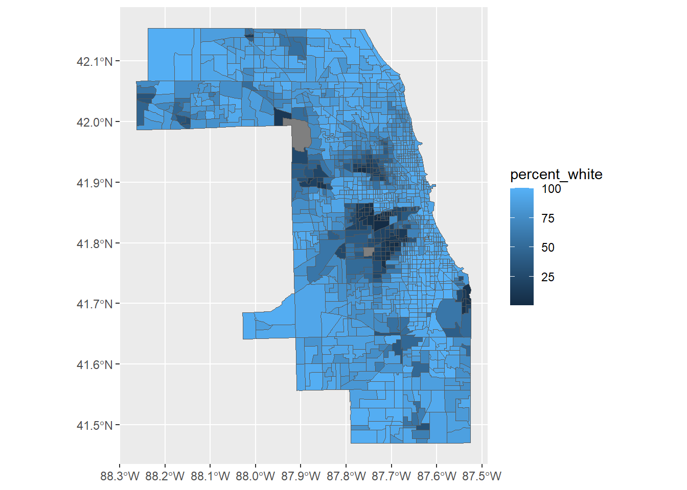

# You may need to install the packages: tigris, sf and gt
library(tidyverse)
library(tidycensus)
library(tigris)
library(sf)
library(gt)Download and analyze Census data with 
11.S954 Applied Data Science for Cities
Overview
Today we have a two-part lab, in which we are going to use American Community Survey (ACS) data to approach a classic planning question: what is the racial distribution like in my study area? We will address this question by creating both visual representations and numerical indicators, two potential research directions involving Census data in R.
In the first part, we are going to focus our study on the City of Chicago, which is situated in Cook County, Illinois. The tract-level Census data is available for states and counties but not for individual cities. Therefore, we will need to extract data for Chicago from the broader dataset encompassing Cook County, taking advantage of the spatial data object returned by tidycensus.
In the second part, we will examine racial segregation in Chicago. Using available Census data, we can apply segregation indicators to assess the degree of racial group segregation within given regions. This involves continuously using and extending the fundamental dplyr data wrangling skills.
A review of tidycensus key steps
In order to use tidycensus to download data, you’ll need the following:
- A Census API key (if you don’t already have one, please request one from the census bureau)
- A desired geography to look up (for example, tract- or block group-level data)
- The variables we want to look up (for example, the complete variable list for 2021 5-year ACS, you can also retrieve this list by calling
load_variables())
Optionally, you will also need to specify:
- The state and county names to define your study region.
- The census year you want data for (we’ll start with 2021)
- The survey you’d like to use (Decennial Census, ACS 1-, or 5-year data)
As a review, this example below returns the number of non-Hispanic White alone population and the number of total population by tract in Cook County, Illinois. The table we consult is B03002: Hispanic or Latino Origin by Race.
cook_race <- get_acs(
geography = "tract",
state = "IL",
county = "Cook",
variables = c("B03002_002","B03002_001"),
output = "wide",
geometry = TRUE) The two arguments that we added to this download call are essential for integrating Census data into the R data processing pipeline:
output = "wide"downloads data in a format that is easier for column-wise calculation. It does so by creating two columns (“_E” and “_M”, representing the estimate and margin of error) for each variable.geometry = TRUEreturns a simple features (sf) object with spatial information saved for each tract. What we need to know for such objects are: 1) they can be handled by thesfpackage, which has been the dominant spatial data library in R for years; and 2) the presence of thegeometryvariable within ansfobject is pivotal for enabling spatial analysis.
As we did in class, we can use mutate to create a new column percent_white that represents the percentage of the White population, and pass this column to ggplot as the fill “aesthetic” (i.e. fill) of our mapping.
cook_race |>
mutate(percent_white = (B03002_002E/B03002_001E)*100) |>
ggplot() +
geom_sf(aes(fill = percent_white))
Part 1 Map racial distribution
Construct multiple variables
In most cases, our data requirements from the Census won’t be limited to just two variables. A common practice is to save a number of variables (possibly spanning multiple tables) as a single object and then insert this object into the download call. See the following code. Notice that we can also rename the IDs into something more descriptive during this process.
vars <- c(
White = "B03002_003",
Black = "B03002_004",
AIAN = "B03002_005",
Asian = "B03002_006",
NHPI = "B03002_007",
Hispanic = "B03002_012",
Totpop = "B03002_001"
)Go ahead and perform the get_acs with the input vars.
cook_race <- get_acs(
geography = "tract",
state = "IL",
county = "Cook",
variables = vars,
output = "wide",
geometry = TRUE) Take a quick look at the race data we have downloaded. As we requested data in a “wide” format, each variable has its “E” and ”M” columns.
We can use dplyr::select to slim down this dataset by excluding the margin-of-error columns, we can select columns whose names have a pattern that ends_with("E").
cook_race <-
cook_race |>
select(GEOID, NAME, ends_with("E"))Modify Geographies
Let’s consider a situation where the study area does not align with the provided geographies. Take the city of Chicago, for instance, which cannot be directly inserted into the get_acs argument as it is not a county. How is Chicago located within Cook County exactly? We can use another census-related package tigris for a visual check of the place boundaries. tigris fetches census geographics. You can think of it as a programmatic way of downloading TIGER/Line Shapefiles.
The function place fetches census-designated place. The city of Chicago is one of such places in Illinois.
options(tigris_use_cache=TRUE) # This is to allow tigris to use caching for downloaded data so that we don't need to fetch the same data again every time you need it.
# Download the boundary of Chicago.
chi_boundary <- places(state = "IL") |>
filter(NAME == "Chicago")Now let’s plot the two shapefiles together to see the overlay:
ggplot()+
geom_sf(data = cook_race)+
geom_sf(data = chi_boundary, color = "blue", linewidth = 0.5, fill = NA)Both the Census table and geography we have obtained are sf objects. An extensive vignette with examples using sf may be found here. In this lab, we will only use the st_intersection function to perform a geometric intersection between two spatial objects.
In the following code, we will extract tract-level racial data that fall within the boundary of the City of Chicago. The modified result will be saved to a new name chicago_race.
chicago_race <-
st_intersection(cook_race, chi_boundary)Check your chicago_race object. st_intersection returns a result that combines the attributes of both input tables. That is why we have a table that has 26 columns as opposed to 10. Let’s do another round of select , then this dataset is good to go.
chicago_race <- chicago_race |> select(GEOID:TotpopE)Pause here and use saveRDS function to save the chicago_race dataset to your data folder. We want to keep an intermediate result so that you can always come back. A quick check - it now has 862 rows and 10 columns.
saveRDS(chicago_race, "data/<your file name>.rds")
If you were wondering what the file type .rds is, it’s a more flexible way to save and load R objects compared to other formats like CSV or plain text files, which may lose some data structure information (such as spatial information).
Note: At this point, you can also save chicago_race as a shapefile, which is fully compatible with GIS software. Even if you aren’t conducting extensive spatial analysis within R, you can choose to download data in R and then transfer it to your GIS software of choice for further geospatial processing and visualization. The function is st_write(chicago_race, "data/<your file name>.shp")
Join another Census data
A simple measure of racial wealth disparity is to look at how income levels and racial backgrounds are spread among tracts. We can go back to download median household income data and join it with our existing racial dataset.
cook_income <- get_acs(
geography = "tract",
state = "IL",
county = "Cook",
variables = "B19013_001",
output = "wide") We are going to use a new function left_join from the dplyr package. You can read about different joining types and illustrative examples here. But simply put, we are trying to combine two datasets (x and y) based on a shared column. A left join keeps all the rows from x. If a value in the key column in x doesn’t exist in y, the row will contain NA values for all the y columns.
joined_data <-
left_join(chicago_race, cook_income, by="GEOID")ggplot(joined_data)+
geom_point(aes(x=WhiteE/TotpopE, y=B19013_001E), cex = .5, alpha = .2, na.rm = TRUE) +
labs(title = "Tract Median Household Income vs White Population", x = "Percent White", y = "Median Household Income") +
scale_x_continuous(labels = scales::percent)+
scale_y_continuous(labels = scales::comma)+
theme_minimal()If you are curious, you can modify the plot to show the relationship between income and the percentage of other racial groups.
Reshape data from wide to long format
We now have estimates of each group captured in separate columns, along with a total population column. We could make six new columns to calculate and store the percentages for racial groups, but it would make the dataset a bit cumbersome.
We have two functions in tidyr to help us transform the dataset structure: pivot_wider and pivot_longer. For example, using pivot_longer, we can stack the six variables and make multiple rows for each unique identifier.
The essential arguments of pivot_longer are:
cols: the portion of the dataset you want to modify. For instance, here we will leave theTotpopEas its own column and only modify the racial group columns.names_toandvalues_to: conceptually we need two new columns, one for stacking the racial group names and another for the corresponding values. Here we are giving the former a name called “racial_groups”, and the latter a name called “estimate”. The names are totally your choice.
chi_race_long <- chicago_race |>
pivot_longer(
cols = c(WhiteE:HispanicE),
names_to = "racial_groups",
values_to = "estimate"
)From here, calculating the population rate will be much easier. What we will do in the following code are:
- use
mutateto calculate the race-specific population rate (divide the racial group population column by the total population column), - use
selectto select the variables we need and remove the others
Make sure to examine each row and figure out how they impact the results.
chi_race_long <-
chi_race_long |>
mutate(percent = round((estimate/TotpopE)*100, 2)) |>
select(GEOID, NAME, racial_groups, TotpopE, estimate, percent) Take a look at the racial_groups column of chi_race dataset. You’ll see there is always a character “E” at the end of each racial group name, carried over from the original Census data. This is something we can fix using a string modification function str_sub. We take each string and keep all characters from the beginning (the start of the string) up to the second-to-last character. So, it essentially removes the last character from each string.
chi_race_long <- chi_race_long |>
mutate(racial_groups = str_sub(racial_groups, end = -2))A quick check of what your dataset chi_race_long should look like at this step. If you are unsure about your result, you can read your stored RDS data again, then run the code chunks labeled “data-wrangling-1” through “data-wrangling-3”.
chi_race_long |> head(3) |> gt()| GEOID | NAME | racial_groups | TotpopE | estimate | percent | geometry |
|---|---|---|---|---|---|---|
| 17031230200 | Census Tract 2302, Cook County, Illinois | White | 1979 | 709 | 35.83 | list(c(-87.713305, -87.711901, -87.706877, -87.706765, -87.70686, -87.70855, -87.71018, -87.713417, -87.713305, 41.910037, 41.910059, 41.910147, 41.910714, 41.913716, 41.913705, 41.91363, 41.913589, 41.910037)) |
| 17031230200 | Census Tract 2302, Cook County, Illinois | Black | 1979 | 164 | 8.29 | list(c(-87.713305, -87.711901, -87.706877, -87.706765, -87.70686, -87.70855, -87.71018, -87.713417, -87.713305, 41.910037, 41.910059, 41.910147, 41.910714, 41.913716, 41.913705, 41.91363, 41.913589, 41.910037)) |
| 17031230200 | Census Tract 2302, Cook County, Illinois | AIAN | 1979 | 0 | 0.00 | list(c(-87.713305, -87.711901, -87.706877, -87.706765, -87.70686, -87.70855, -87.71018, -87.713417, -87.713305, 41.910037, 41.910059, 41.910147, 41.910714, 41.913716, 41.913705, 41.91363, 41.913589, 41.910037)) |
Create a faceted map
In our long-format data table, racial group names are consolidated within a single column. We can create a map that visualizes the distribution of the percent attribute while categorizing it based on the racial groups attribute.
chi_race_long |>
ggplot() +
geom_sf(aes(fill = percent, color = percent)) +
facet_wrap( ~ racial_groups) +
coord_sf(datum = NA) +
theme_minimal()The facet_wrap in the code takes one categorical variable as its input (racial_groups) and breaks the data into subsets accordingly. The ~ here is a shorthand for “relative to”, meaning I’m gonna split the whole data based on their relationship to racial_groups.
Exercise
Now that you have some new tools that you are familiar with, please start a new .qmd or .Rmd Document, and try your hand at the following:
1) Create a dataset for the City of Chicago that shows the percentage of households that are experiencing housing cost burden (i.e. spending 30 percent or more of income on housing costs), grouped by housing ownership (owner-occupied or renter-occupied).
The universe of this characteristic is reflected in the B25106 table.
If we want a count of all owner-occupied households experiencing cost burden, we need to sum these variables: B25106_006, B25106_010, B25106_014, B25106_018, B25106_022. If we want a count of all renter-occupied households experiencing cost burden, we need to sum up B25106_028, B25106_032, B25106_036, B25106_040, B25106_044.
The total number of owner-occupied households is B25106_002; The total number of renter-occupied households is B25106_024.
2) Create maps depicting the percentages of the resident population experiencing housing cost burdens in both owner-occupied and renter-occupied housing.
- You can choose to create two individual maps, or one faceted map. But in either case, your calculated percentage values should go to the
geom_sf(fill = )argument.
Part 2 Measure Racial Segregation
In the second part of the lab, we will start to think about summary measures of the extent to which these groups are segregated within the city. We will use census tracts as a unit of analysis to help us describe racial segregation.
There are, of course, many ways to measure segregation, from more traditional methods that rely on ACS data and residential context, to more spatial and temporal dynamic methods that take advantage of human behavior data and mobile tracking data. In this analysis, we will look at the “evenness” and “exposure” indices summarized by Massey and Denton (1988), and primarily refer to this document to create two relatively straightforward indicators of segregation measurement.
For local administrative, planning, and data collection purposes, Chicago is divided into 77 community areas, and these areas are further grouped into 7 administrative regions.

To save the in-class data processing time, we will read in a prepared dataset, which is built on the racial distribution of all tracts within Chicago, but each tract is assigned to its respective region, indicated in the Region column. The dataset also includes the total population sum for all tracts within each specific region, presented in columns labeled as sum_xxx.
Please download chi_race_region.rds and put it in your data folder. This data was produced using this code lab3_acs.R.
chi_race_region <- readRDS("../data/chi_race_region.rds")Indicators for measuring segregation
Dissimilarity
Dissimilarity is a measure of evenness between two populations. Conceptually, dissimilarity represents the proportion of a group that would need to move in order to create a uniform distribution of population.
A dissimilarity score of 0 would mean a completely even distribution of two populations (no segregation). A dissimilarity score of 1 would mean a completely segregated minority population (100% of the minority population would need to move to achieve an even distribution among the population. Dissimilarity is calculated as follows:
\[ D = 0.5\Sigma_{i=1}^{n}|\frac{w_{i}}{W}-\frac{b_{i}}{B}| \]
If we are interested in measuring non-Hispanic Black-White Dissimilarity, then:
- \(w_{i}\) is the White population of tract i
- \(W\) is the total number of White population in the region;
- \(b{i}\) is the Black population in tract i;
- \(B\) is the total number of Black population in the region;
With the dataset structure we have constructed, calculating D can be broken down into a series of codable parts: 1) Calculate fractions inside the absolute value for each row; 2) use abs() to find the absolute value; 3) use group_by() to sum up the data for each region; 4) multiply the numbers by 0.5.
dissimilarity <- chi_race_region |>
mutate(Dissimilarity = abs(Black / sum_Black - White / sum_White)) |>
group_by(Region) |>
summarise(Dissimilarity = round(0.5 * sum(Dissimilarity), 3))Create a more presentable table:
dissimilarity |> gt()| Region | Dissimilarity |
|---|---|
| CENTRAL | 0.489 |
| FAR SOUTH | 0.829 |
| NORTH | 0.542 |
| NORTHWEST | 0.449 |
| SOUTHEAST | 0.702 |
| SOUTHWEST | 0.827 |
| WEST | 0.772 |
gt is powerful tool for creating elegant and customizable tables with ease. For instance, we can add a few more lines to enhance this table by adding colorization based on the values.
dissimilarity |>
gt() |>
tab_header("Black-White Dissimilarity in Chicago Regions") |>
data_color(
columns = `Dissimilarity`,
colors = scales::col_numeric(
palette = c("white", "darkred"),
domain = c(0, 1)
)
)| Black-White Dissimilarity in Chicago Regions | |
| Region | Dissimilarity |
|---|---|
| CENTRAL | 0.489 |
| FAR SOUTH | 0.829 |
| NORTH | 0.542 |
| NORTHWEST | 0.449 |
| SOUTHEAST | 0.702 |
| SOUTHWEST | 0.827 |
| WEST | 0.772 |
How would you interpret these dissimilarity values? Where is Black-White dissimilarity the highest within the region? Where is it the lowest? Does the result confirm the racial distribution map we produced in the first part?
Interaction
A second common measure of segregation is interaction, which assesses isolation levels rather than spatial distribution directly. Such indices typically estimate the likelihood of individuals from one group encountering or interacting with members of another group, based upon their distribution within areal subunits (tracts). For instance, non-Hispanic Black-White interaction is calculated as follows:
\[ I=\Sigma_{i=1}^{n}(\frac{b_{i}}{B})(\frac{w_{i}}{t_{i}}) \]
where:
- \(b_{i}\) is the Black population of tract i;
- B is the Black population of the region;
- \(w_{i}\) is the White population of tract i;
- \(t_{i}\) is the total population of tract i.
interaction <- chi_race_region |>
mutate(Interaction = (Black/sum_Black) * (White/Totpop)) |>
group_by(Region) |>
summarise(Interaction = sum(Interaction, na.rm = TRUE) |> round(3))The maximum value of I depends both on the distribution of ethnic groups AND on the proportion of minorities in the city. But generally speaking, higher values mean two groups are more likely to be evenly distributed, and lower values mean a more segregated minority population.
Create a similar table for the non-Hispanic Black-White interaction index:
interaction |>
gt() |>
tab_header("Black-White Interaction in Chicago Regions") |>
data_color(
columns = `Interaction`,
colors = scales::col_numeric(
palette = c("darkred", "white"),
domain = c(0, 1)
)
)| Black-White Interaction in Chicago Regions | |
| Region | Interaction |
|---|---|
| CENTRAL | 0.423 |
| FAR SOUTH | 0.053 |
| NORTH | 0.449 |
| NORTHWEST | 0.405 |
| SOUTHEAST | 0.038 |
| SOUTHWEST | 0.049 |
| WEST | 0.071 |
How would you interpret these interaction values? Where is Black-White interaction the highest within the region? Where is it the lowest? Does the result confirm the racial distribution map we produced in the first part?
Work products
Please submit a .qmd (or .Rmd) file and a knitted HTML file that shows your work and responses for each of the Exercise included in this lab. Please upload your report to Canvas by the end of day, Tuesday, Nov 14.